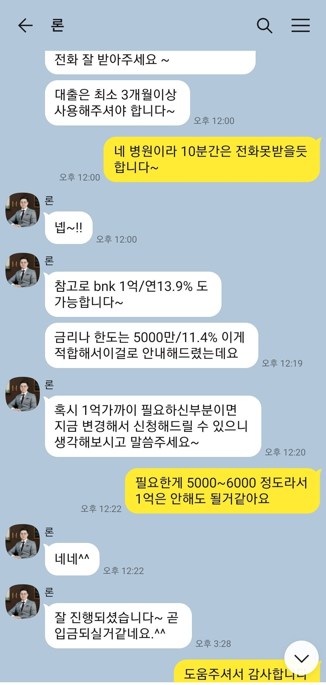

[직장인대출] 5천만원 대출후기(김용혁 이사님)
김용혁 이사님께 카톡으로 문의드리고 상담받았습니다 필요자금 5000만이었구요
사대보험 직장인에 연봉7천
신용평점 올크 950 / 나이스 919점 입니다
기대출은 마이너스통장 5천 있었습니다
처음에 은행권 1곳 가조회했는데 부결이나서
캐피탈 2곳, 저축은행 1곳 가조회 하였고
2곳은 한도 4천~5천사이에 이율 15% 정도 나왔고
캐피탈은 한도 5천에 11.4% or 한도 1억에 13.9%가 나왔습니다
필요한 금액이 5천이여서 캐피탈로 진행하였고 이자율 11.4%에 바로 5천만원 입금받았습니다.
빠른 일처리로 당일 대출진행되게 도와주신 김용혁 이사님께 감사드리고, 급할때 찾게되는 뱅크앤론에도 감사드립니다.
